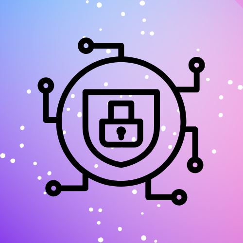

Protect Your Crypto Assets
Pwned Wallet Check helps you verify if your crypto wallet has been compromised in known breaches. Stay safe by ensuring your funds remain secure. WE DO NOT STORE YOUR INFORMATION!!
Has my Wallet been Pwned?
Enter your wallet address below and verify if it has been compromised. WE DO NOT STORE YOUR INFORMATION!